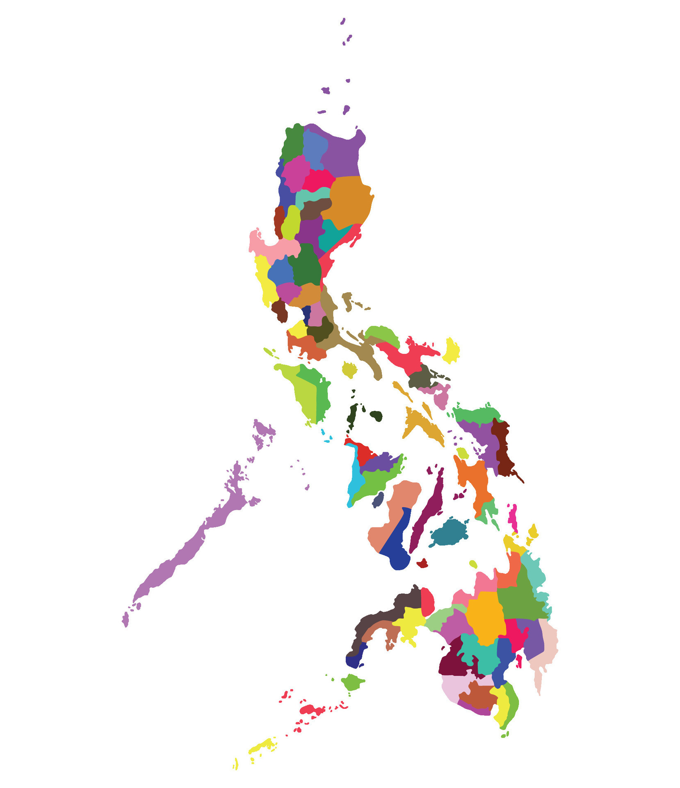
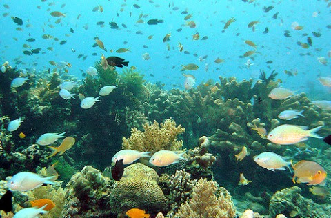
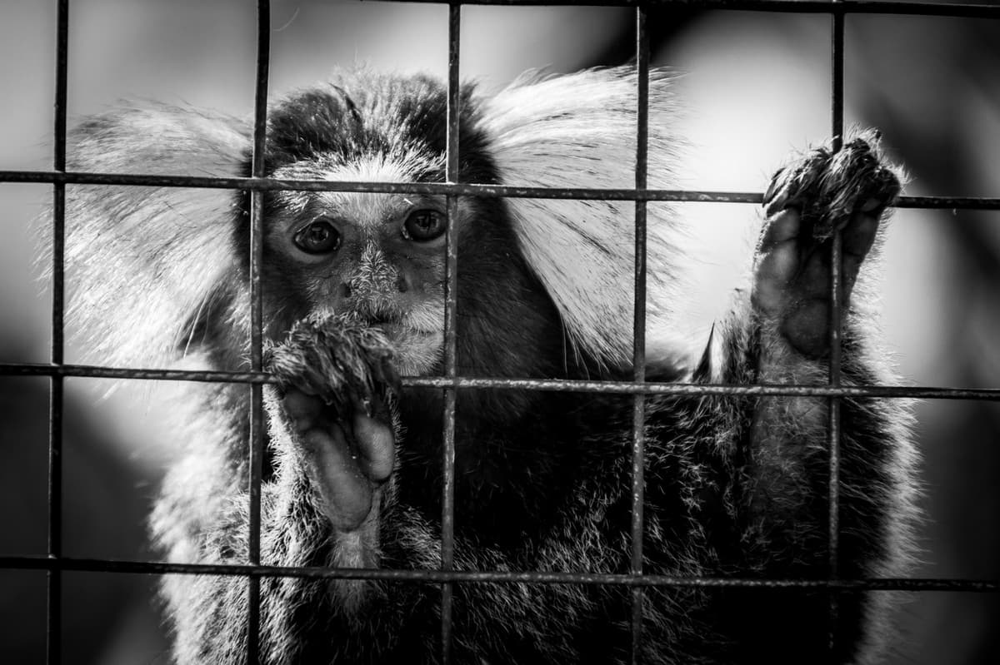
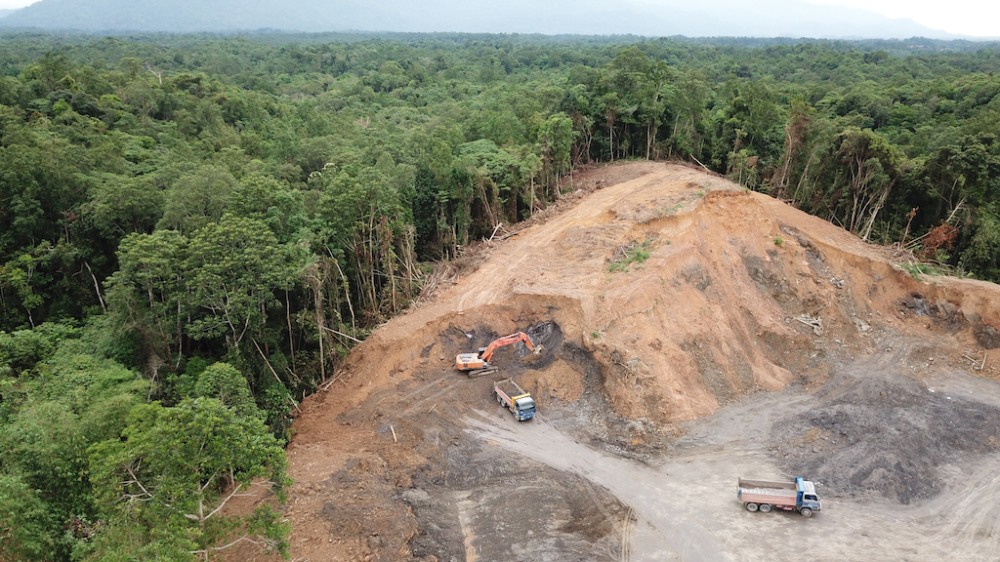
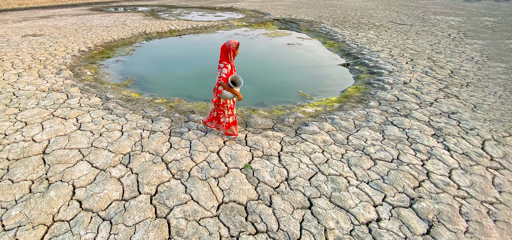

Vanishing Treasures: Protecting Endangered Species in the Philippines

Philippine Wildlife Biodiversity
According to Conservation International, the Philippines is one of the megadiverse
countries in the world, a host to over two-thirds of Earth’s biodiversity and between 70%-80% of the
world’s plant and animal species. The main criterion to belong on this list is endemism – a country must
have at least 5,000 species of endemic plants and must border marine ecosystems.
The World Wide Fund for Nature (WWF) enlisted the Philippines as part of the Coral Triangle. The Coral Triangle
is the planet’s richest centre of marine life and coral diversity, with over 6,000 species of fish, 76% of the world’s
coral species, and an awe-inspiring array of wildlife.
The country ranks 3rd in terms of marine biodiversity. It hosts almost 10,000 marine species which is
equivalent to nearly one-fifth of the world’s marine species. It has 1,700 reef species and at least 3,214
fish species (121 are endemic). –Biodiversity Management Bureau
Based on the data of the Department of Environment and Natural Resources (DENR), the Philippines has an estimated
207 terrestrial mammals (133 are endemic), 691 birds (239 endemic), 419 reptiles (241 endemic) and 120 amphibians
(98 endemic). This makes the Philippines to be a center for animal diversity with an estimated total of 1, 437
terrestrial wildlife and almost 49% of these are endemic.

Natural land habitats in the Philippines
A wide range of ecosystems, landscapes and habitats support the Philippines’ unique biodiversity.
Many of these are threatened by human activity. Forest ecosystems cover 7.2 million hectares in the Philippines,
accounting for almost a quarter of the country’s total land area.
However, it’s estimated that the Philippines lost 2.1% of its forest cover each year between 2000 and 2005 –
the second-fastest deforestation rate in Southeast Asia and the ninth-fastest in the world.
The agricultural ecosystem of the country is also noteworthy. Rice, coconut, mung beans, taro, yam,
and bananas are all grown in the Philippines, and each of these agricultural areas has its own ecology.
However, agricultural biodiversity is on the decline, as is the amount of land dedicated to these activities.

The Philippines’ underwater ecosystem
Inland water biodiversity is following a similar pattern, with data revealing a decline
in water quality and biodiversity in the country’s largest lake – Laguna de Bay – and its associated rivers.
The Philippines has a diverse coastal, marine, and island ecosystem. It’s located within the Coral
Triangle, which is home to the world’s greatest marine biodiversity. This environment, however,
is under grave threat.
While mangrove cover has increased slightly in recent years, reef cover, seagrass cover and fisheries
production have all decreased significantly.
Species endangerment and extinction is a complex phenomenon
with many interwoven causes. These are the main ones.
The exotic pet trade
Endangered species are often captured by poachers looking to profit from the lucrative trade in
exotic pets. Many don’t even make it to their prospective owners, but instead die in transit.
Hunting and overfishing
Many endangered species are pushed to the edge of extinction because they’re hunted for their meat.
In some cases, locals confuse the endangered species with a more common one – for example, getting the
endangered Philippine freshwater crocodile mixed up with the much more common saltwater crocodile.
Ocean environments are damaged when fishermen use dynamite in an attempt to increase their catch.
Deforestation and agricultural land clearing
Deforestation leads to the extinction of animals and plants on a massive scale, as the animals lose their
habitat and protective cover. Forests and meadows are cleared to make way for the growing of crops such as rice.
Climate change
Climate change will have long-term consequences for species as expected changes in temperature, rainfall, and seasonality
will cause shifts in tree species distribution and therefore habitat. There may also be changes in migration patterns and
more natural disasters such as typhoons. Underwater, rising water temperatures cause coral bleaching, affecting both coral
reefs and the species who rely on them as a habitat.
Pollution
Plastic pollution is a major contributor to the decline in species in the Philippines.
Plastics end up in the ocean where they are eaten by birds and sea creatures, causing injury and death.





Easy Things You Can Do To Save Endangered Species
1.Learn about endangered species in your area.
Teach your friends and family about the wonderful wildlife,
birds, fish and plants that live near you. The first step to protecting endangered species is learning about how
interesting and important they are. Our natural world provides us with many indispensable services including clean
air and water, food and medicinal sources, commercial, aesthetic and recreational benefits.
2. Visit a national wildlife refuge, park or other open space
. These protected lands provide habitat to many native
wildlife, birds, fish and plants. Scientists tell us the best way to protect endangered species is to protect the places
where they live. Get involved by volunteering at your local nature center or wildlife refuge. Go wildlife or bird
watching in nearby parks. Wildlife related recreation creates millions of jobs and supports local businesses.
3. Make your home wildlife friendly.
Secure garbage in shelters or cans with locking lids, feed pets indoors and
ck pet doors at night to avoid attracting wild animals into your home. Reduce your use of water in your home
and garden so that animals that live in or near water can have a better chance of survival. Disinfect bird
baths often to avoid disease transmission. Place decals on windows to deter bird collisions. Millions of birds
die every year because of collisions with windows. You can help reduce the number of collisions simply by placing
decals on the windows in your home and office.
4.Native plants provide food and shelter for native wildlife. Attracting native insects like bees and butterflies
can help pollinate your plants. The spread of non-native species has greatly impacted native populations around the world.
Invasive species compete with native species for resources and habitat. They can even prey on native species directly,
forcing native species towards extinction.
5.Herbicides and pesticides may keep yards looking nice but they are in fact hazardous pollutants that affect wildlife at many levels.
Many herbicides and pesticides take a long time to degrade and build up in the soils or throughout the food chain.
Predators such as hawks, owls and coyotes can be harmed if they eat poisoned animals. Some groups of animals such as
amphibians are particularly vulnerable to these chemical pollutants and suffer greatly as a result of the high levels
of herbicides and pesticides in their habitat.
6.Slow down when driving.
Many animals live in developed areas and this means they must navigate a
landscape full of human hazards. One of the biggest obstacles to wildlife living in developed areas is roads.
Roads divide habitat and present a constant hazard to any animal attempting to cross from one side to the
other. So when you’re out and about, slow down and keep an eye out for wildlife.
7. Recycle and buy sustainable products.
Buy recycled paper, sustainable products like bamboo and Forest Stewardship Council
wood products to protect forest species. Never buy furniture made from wood from rainforests. Recycle your cell phones,
because a mineral used in cell phones and other electronics is mined in gorilla habitat. Minimize your use of palm oil
because forests where tigers live are being cut down to plant palm plantations.
8. Never purchase products made from threatened or endangered species.
Overseas trips can be exciting
and fun, and everyone wants a souvenir. But sometimes the souvenirs are made from species nearing extinction.
Avoid supporting the market in illegal wildlife including: tortoise-shell, ivory, coral.
9. Harassing wildlife is cruel and illegal. Shooting, trapping, or forcing a threatened or endangered animal
into captivity is also illegal and can lead to their extinction. Don’t participate in this activity, and report
it as soon as you see it to your local state or federal wildlife enforcement office.
10. Protect wildlife habitat.
Perhaps the greatest threat that faces many species is the widespread destruction
of habitat. Scientists tell us the best way to protect endangered species is to protect the special places where
hey live. Wildlife must have places to find food, shelter and raise their young. Logging, oil and gas drilling,
over-grazing and development all result habitat destruction. Endangered species habitat should be protected and
these impacts minimized.By protecting habitat, entire communities of animals and plants can be protected
together.